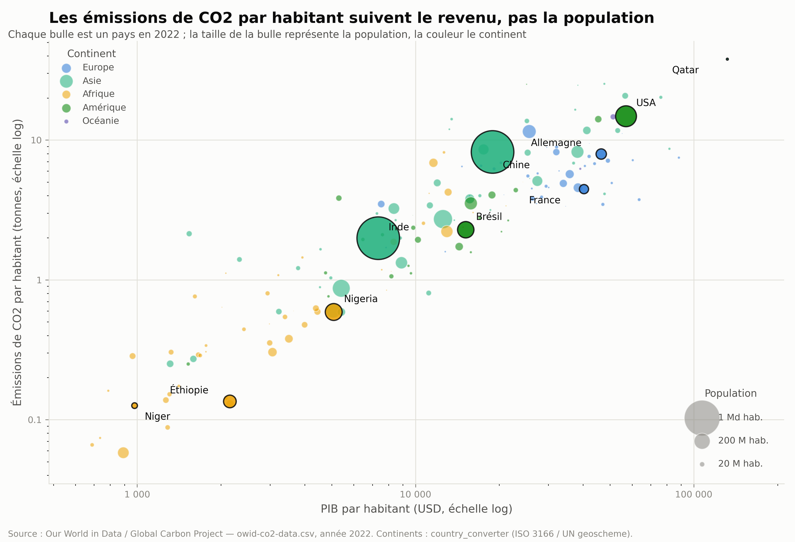
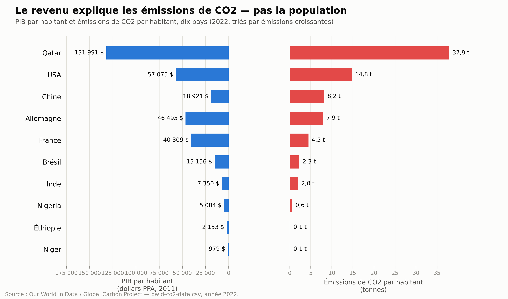
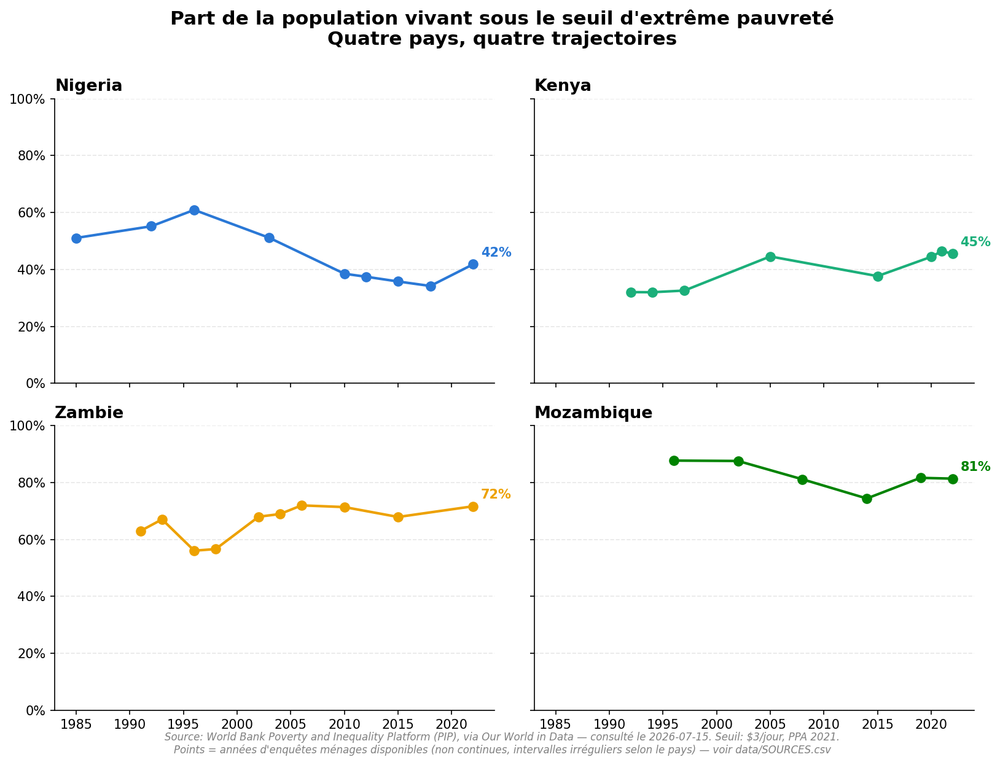

Ce qui explique l'empreinte carbone d'un pays
Données 2022
On entend souvent l'argument inverse dans le débat public : que le vrai problème climatique serait le nombre d'habitants sur Terre. Cet argument déplace le regard vers la démographie des pays du Sud plutôt que vers les modes de vie des pays riches.
On a regardé les chiffres : population, PIB par habitant et émissions de CO2 par habitant, pays par pays (Our World in Data / Global Carbon Project, 2022). Le résultat est net : ce qui prédit l'empreinte carbone d'un pays, c'est son niveau de revenu — pas sa population.
Chaque bulle est un pays. Sa position horizontale est son PIB par habitant, sa position verticale ses émissions de CO2 par habitant, et sa taille sa population. Si la démographie expliquait les émissions, les grosses bulles (Inde, Nigeria, Chine) seraient en haut du graphique. Elles ne le sont pas : la position d'un pays suit une diagonale nette, du revenu vers les émissions.

Source : Our World in Data / Global Carbon Project — owid-co2-data.csv, 2022
Le nuage de points précédent montre la relation sur l'ensemble des pays, mais les valeurs précises sont difficiles à lire sur une échelle logarithmique. Voici dix pays représentatifs, du plus pauvre au plus riche par habitant.

Source : Our World in Data / Global Carbon Project — owid-co2-data.csv, 2022
Ce graphique répond à une question précise : qui pollue le plus, par personne ? Ce n'est pas la même question que « quel pays émet le plus en tonnage total ? ». L'Inde, avec 1,4 milliard d'habitants, émet plus de CO2 en tonnage brut que la France (67 millions d'habitants) — même si chaque Indien émet, en moyenne, moins de la moitié de ce qu'émet chaque Français.
Le PIB par habitant est aussi une moyenne nationale : elle masque les inégalités internes. Un individu riche en Inde ou au Nigeria a souvent une empreinte carbone comparable à un riche européen ; un individu pauvre aux États-Unis émet beaucoup moins que la moyenne américaine.
| Pays | PIB/habitant (PPA $, 2011) | CO2/habitant (t) |
|---|---|---|
| Qatar | 131 991 | 37,9 |
| États-Unis | 57 075 | 14,8 |
| Chine | 18 921 | 8,2 |
| Allemagne | 46 495 | 7,9 |
| France | 40 309 | 4,5 |
| Brésil | 15 156 | 2,3 |
| Inde | 7 350 | 2,0 |
| Nigeria | 5 084 | 0,6 |
| Éthiopie | 2 153 | 0,1 |
| Niger | 979 | 0,1 |
Limites : une seule année (corrélation, pas trajectoire ni causalité) ; le CO2 mesuré est territorial, pas l'empreinte de consommation (les pays qui délocalisent leur industrie lourde paraissent moins émetteurs qu'ils ne le sont en réalité) ; les moyennes nationales masquent les inégalités internes.
Le tableau ci-dessus montre que le Nigeria émet 0,6 tonne de CO2 par habitant, contre 4,5 pour la France. Ce n'est pas un cas isolé : on a regardé l'évolution de l'extrême pauvreté dans quatre grands pays d'Afrique subsaharienne — Nigeria, Kenya, Zambie, Mozambique — et aucun des quatre ne suit la même trajectoire.
Les données viennent de la World Bank Poverty and Inequality Platform, qui compile les enquêtes ménages nationales. Seuil retenu : extrême pauvreté internationale, 3 $ par jour, en dollars ajustés pour le pouvoir d'achat (PPA 2021).

Source : World Bank Poverty and Inequality Platform (PIP), via Our World in Data — consulté le 15 juillet 2026. Seuil : 3 $/jour, PPA 2021.
Ce qui pèse sur ces trajectoires diffère d'un pays à l'autre : au Nigeria, la chute du naira (environ divisé par deux face au dollar en 2023) et la suppression des subventions au carburant ; au Kenya, une sécheresse régionale prolongée et la hausse des prix alimentaires ; en Zambie, la dépendance au cours mondial du cuivre et un défaut de dette souveraine en 2020 ; au Mozambique, la crise des « dettes cachées » (2016), une insurrection armée à Cabo Delgado, et des cyclones à répétition.